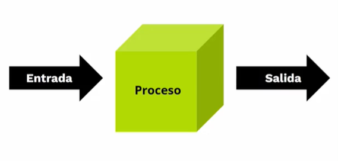

Bienvenidos
Algoritmia
La Algoritmia permite el desarrollo de software y progración, la algoritmia desempeña un papel fundamental en
desarrollo de software y la programación general.
Análisis de datos y toma de decisiones, Aplicando el estudio y la investigación. haz Click aqui para mas información
partes de los algoritmos de programaciòn
Todo algoritmo de constar de las siguientes partes:
- Input o entrada: El ingreso de los datos que el algoritmo necesita para operar
- Proceso: Se trata de la operaciòn lògica formal que el algoritmo emprenda con lo recibido del Input
- Output o salida: Los resutados obtenidos del proceso sobre el input, una vez terminada la ejecuciòn del
algoritmo
¿Para qué sirve un algoritmo?
 Dicho muy llanamente, un algoritmi sirve para resolver paso a paso un problema. Se trata de una serie de
instrucciones ordenadas y secuenciadas para guiar un proceso determinado.
En las ciencias de la computación, no obstante, los algoritmos constituyen el esqeleto de los procesos que
luego se codificarán y programaran para que sea realizados por el computador
Dicho muy llanamente, un algoritmi sirve para resolver paso a paso un problema. Se trata de una serie de
instrucciones ordenadas y secuenciadas para guiar un proceso determinado.
En las ciencias de la computación, no obstante, los algoritmos constituyen el esqeleto de los procesos que
luego se codificarán y programaran para que sea realizados por el computador
Tipos de algoritmos
Existen cuatro tipos de algoritmos en informatica, son:
- Algoritmos computacionales: Un algoritmo cuya resolución depende del cálculo, y que puede ser
desarrollado por una calculadora o computadora sin dificultades.
- Algoritmo no computacionales: Aquellos que no requierende los procesos de un computador para resolverse o
cuyos pasos son exclusivos para resolución por parte de un ser humano
- Algoritmo cualitativos: Se trata de un algoritmo en cuya resolución no intervienen cálculos numéricos,
sino secuencias lógicas y/o formales
- Algoritmos cuantitativos: Todo lo contrario, es un algoritmo que depende de cálculo matemáticos para dar
con su resolución
Algoritmos y estructras de programaciòn
Fases de creaciòn de un programa
El proceso de resoluciòn de problemas en un ordenador conduce a la escritura de un programa y
su ejecuciòn. Las fases en el desarrollo de un programa pueden resumirse de la siguiente forma
- Analizar el problema:consiste en conocer perfectamente en que consiste y que resultados se desean
obtener.
- Planificaciòn:de la resoluciòn del problema, dividiendolo, si es complicado, en una secuencia de
etapas mas simples. Esta fase se lleva a cabo EN UN PAPEL, estableciendo lo mas claramente
posible la finalidad de cada etapa, los datos que se necesitan de entrada, los datos que producirian
en salida.
- Ediciòn:del còdigo fuente, es decir, escritura del mismo utilizando un editor de textos simple (sin
formato) y un lenguaje de programaciòn. Los programas fuente seran almacenados en ficheros
de texto, normalmente en el disco duro del ordenador.
- . Compilacion y ejecucion:del programa al lenguaje maquina.
- Correccion de errores:del programa. Los errores se corregiran en el codigo fuente, repitiendo
los pasos 3 y 4 tantas veces como sea necesario. Si se producen errores en la logica del programa,
es decir, si el programa “funciona” pero produce resultados incorrectos, hay que modificar el
algoritmo volviendo al paso 2. Estos errores son los mas dificiles de detectar.
- Documentacion:Una vez que el programa funcione correctamente, es conveniente revisar el
codigo fuente para ordenarlos, eliminar calculos innecesarios e incluir las lineas de comentario
necesarias, que normalmente deben incluir unas breves explicaciones al principio del codigo
sobre la finalidad del programa y sus argumentos de entrada y de salida.
Algoritmos y estructuras de programacion
posteriormente, determinar la sucesion de acciones sencillas (susceptibles de ser ejecutadas por un
ordenador) en que se descompone dicho metodo.
No todos los metodos de solucion de un problema pueden ser puestos es practica en un ordenador.
Para que un procedimiento pueda ser implantado en un ordenador debe ser:
- Preciso:estar compuesto de pasos bien definidos (no ambiguos) y ordenados
- Definido:si se sigue dos veces, se obtiene el mismo resultado cada vez.
- Finito:tener un nùmero finito de pasos
Un procedimiento o metodo para resolver un problema que cumpla los requisitos anteriores se dice
que es un algoritmo. Se puede dar por tanto la siguiente definicion:
Un algoritmo es un metodo para resolver un problema mediante una secuencia de pasos
bien definidos, ordenados y finitos.
Para que se pueda ejecutar el algoritmo es preciso, ademas, que se disponga de las “herramientas” adecuadas para
llevar a cabo cada uno de los pasos. Si no es asi, estos deberan, a su vez, ser
descompuestos en una secuencia (algoritmo) de pasos mas simples que si se puedan llevar a cabo.
Un programa de ordenador es una sucesion de ordenes que describen un algoritmo,
escritas de forma que puedan ser entendidas por el ordenador.
En un algoritmo (y por tanto en un programa) se distinguen las siguientes acciones:
- Entrada:es la informacion de partida que necesita el algoritmo para arrancar.
- Proceso: es el conjunto de todas las operaciones a realizar.
- Salida: son los resultados obtenidos
